Módulo 1: O Olhar Clínico: Inspeção Visual e Dimensional
Vamos começar pelo alicerce de um trabalho de precisão: a inspeção. Esta etapa é um diagnóstico completo dos seus componentes, onde separamos peças aptas para uma montagem de alta performance daquelas que representam um risco. Uma inspeção rigorosa é a sua principal defesa contra falhas prematuras, desalinhamentos e vibrações.
1.1 Enxergando Além do Óbvio: A Inspeção a Olho Nu
A inspeção visual é sua primeira linha de análise técnica. Com um olhar treinado, você identifica defeitos que comprometem a geometria e a integridade do conjunto.
Foque em detalhes críticos como:
- Pistas dos Rolamentos: Procure por qualquer sinal de descascamento (spalling), corrosão por contato (fretting), amassados por impacto (brinelling) ou sulcos causados por contaminação.
- Gaiolas (Separadores): Verifique se há deformações, trincas ou rebites soltos. Uma gaiola danificada pode falhar catastroficamente.
- Mancais (Caixas): Inspecione em busca de trincas (especialmente nos pés e na tampa), roscas danificadas para os parafusos ou pino graxeiro, e verifique a integridade das superfícies de vedação.
- Eixos e Alojamentos: Procure por rebarbas, arranhões, ovalização ou qualquer dano na área de assento do rolamento que possa comprometer o ajuste.
1.2 A Prova dos Nove: Medindo com Precisão Milimétrica
Aqui, a precisão não é negociável. Usando instrumentos calibrados, garantimos que as tolerâncias dimensionais e geométricas, especificadas pelo fabricante, sejam atendidas. É a garantia matemática de uma montagem perfeita.
O que vamos validar com instrumentos de precisão?
- Diâmetros de Eixos e Alojamentos: Utilize um micrômetro para medir o diâmetro do eixo em vários pontos e em dois planos (a 90°) para verificar a conicidade e a ovalização. Faça o mesmo no alojamento do mancal com um súbito.
- Planicidade da Base do Mancal: Use uma régua de precisão e um calibrador de lâminas para garantir que a superfície de montagem seja perfeitamente plana. Uma base irregular deforma o mancal e o rolamento.
- Alinhamento dos Furos do Mancal: Em sistemas com múltiplos mancais, é crucial verificar o alinhamento axial e radial entre eles usando lasers ou relógios comparadores.
- Folga Interna do Rolamento: Antes da montagem, meça a folga radial com um calibrador de lâminas para garantir que é o rolamento correto (C3, C4, etc.) para a aplicação.
1.3 Nosso Ritual de Inspeção: Boas Práticas
Para uma inspeção de nível profissional, siga este protocolo:
- Ambiente Controlado: Realize a inspeção em uma área limpa, bem iluminada e, se possível, com temperatura controlada.
- Instrumentos Calibrados: Paquímetros, micrômetros, súbitos e torquímetros devem ter seu certificado de calibração em dia.
- Normas como Guia: Consulte as normas ISO e as especificações do fabricante para as tolerâncias de ajuste (ex: k6 para eixo, H7 para alojamento).
- Documentação Rigorosa: Registre todas as medições. Este "laudo" é fundamental para a rastreabilidade e análise de falhas futuras.
Módulo 2: Preparando o Terreno: Limpeza Impecável dos Componentes
No universo da montagem de precisão, a limpeza é um pré-requisito absoluto. Contaminantes como poeira, umidade e resíduos de usinagem são os inimigos número um da vida útil de um rolamento. Uma limpeza meticulosa não é estética, é uma etapa técnica fundamental.
2.1 Por que a Sujeira é sua Inimiga Mortal?
Em componentes com tolerâncias na casa dos mícrons, uma única partícula abrasiva pode amassar uma pista de rolamento (indentação), iniciando um processo de fadiga que levará ao descascamento (spalling). A umidade causa corrosão, e solventes incompatíveis podem danificar vedações e gaiolas de polímero.
2.2 Faxina Pesada: Escolhendo seu Método de Limpeza
A escolha do método depende do componente e do nível de contaminação:
- Limpeza Manual com Solventes: Ideal para peças individuais. Utilize solventes de petróleo filtrados e pincéis de cerdas macias. Nunca use estopas ou panos que soltem fibras.
- Lavadoras por Imersão ou Spray: Para limpeza em lote. Utilizam soluções aquosas alcalinas aquecidas. Garanta a compatibilidade química com os materiais.
- Limpeza por Ultrassom: O método de eleição para rolamentos de alta precisão. As ondas de cavitação removem micropartículas de locais inacessíveis, sem contato mecânico.
Atenção: Após a limpeza, seque os componentes imediatamente com ar comprimido filtrado e seco (sem girar o rolamento!) e aplique um óleo protetivo para evitar a oxidação instantânea.
2.3 Tudo Pronto para a Montagem?
A preparação final antes da montagem:
- Inspeção Pós-Limpeza: Uma última verificação visual para garantir que nenhum defeito foi mascarado pela sujeira.
- Lubrificação Primária: Para rolamentos abertos, este é o momento de aplicar a quantidade correta de graxa, preenchendo cerca de 1/3 a 1/2 do espaço livre interno.
- Organização do "Santuário": Mantenha os rolamentos em suas embalagens originais até o último segundo. A montagem deve ocorrer em um ambiente limpo, longe de operações que gerem partículas (esmerilhamento, solda, etc.).
Módulo 3: Tipos de Rolamentos Autocompensadores e Características
1. Tipos de Rolamentos Autocompensadores e Características
Rolamento Autocompensador de Rolos:
-
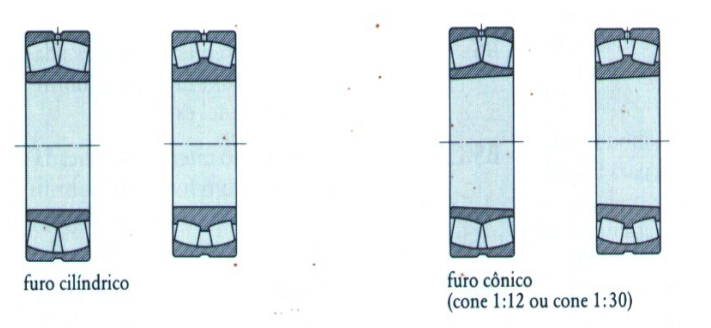
- Possui capacidade de compensar erros de alinhamento e flexão do eixo.
- Absorve cargas radiais e axiais em ambos os sentidos.
- Pode ter furo cilíndrico ou furo cônico (cone 1:12 ou 1:30).
- Um exemplo de identificação para este tipo é 22228E1K.
Rolamento Autocompensador de Esferas:
-
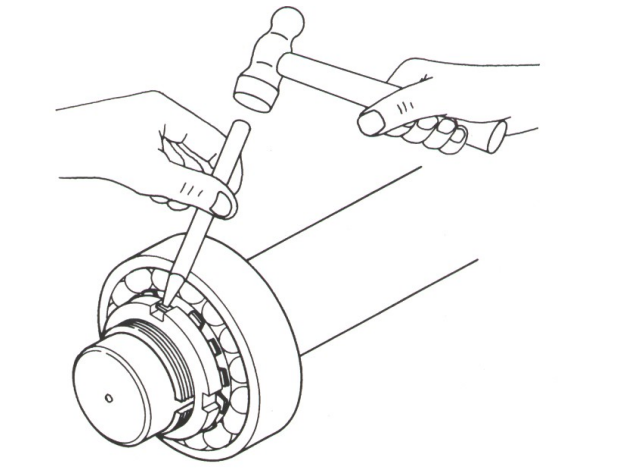
- Também compensa erros de alinhamento e absorve cargas radiais e axiais em ambos os sentidos.
- Disponível com furo cilíndrico ou cônico (cone 1:12).
- Pode vir com duas vedações, identificado como .2RS (furo cilíndrico) ou K.2RS (furo cônico).
- Um exemplo de identificação é 1213K.
2. Preparação e Componentes de Montagem
- Eixo: A tolerância recomendada para o eixo é h9/h8/h7.
- Buchas: A montagem pode ser feita sobre uma bucha de fixação ou uma bucha de remoção.
- Buchas Hidráulicas: Permitem o uso de injeção de óleo sob pressão para facilitar a montagem e a desmontagem. O óleo é bombeado entre as superfícies de contato enquanto parafusos empurram o rolamento.
- Arranjo dos Mancais:
- Para tambores de acionamento, o arranjo típico é Bloqueado Passante (BP) no lado do acionamento e Livre Cego (LC) no lado oposto.
- Para tambores de retorno ou desvio, o arranjo pode ser Bloqueado Cego (BC) no lado do acionamento e Livre Cego (LC) no lado oposto.
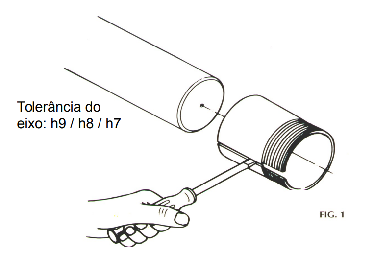
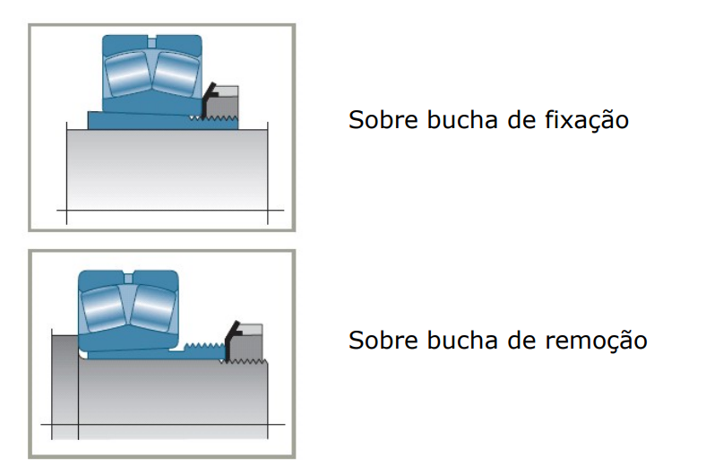
-
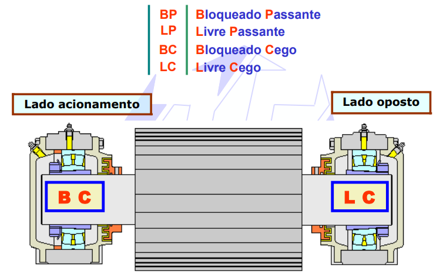
3. Ferramentas para Montagem
- Ferramentas Inadequadas:
- O uso de talhadeira e martelo é inadequado.
- Este método provoca acidentes e pode contaminar o rolamento com o desprendimento de material.
- É impossível ajustar rolamentos grandes com esse método.
- Ferramentas Adequadas:
- Chaves de Gancho: Podem ser usadas na montagem e desmontagem de rolamentos pequenos.
- Chaves de Batida: Usadas na montagem de rolamentos pequenos e médios. 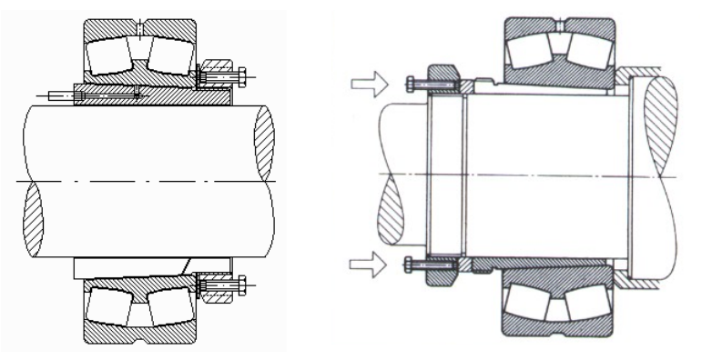
- Porca com Parafusos de Prensagem: Evitam choques sobre a chave de gancho. É importante inserir um anel espaçador entre o parafuso e o rolamento ou bucha.
- Porca e Bomba Hidráulica: Ferramentas para uma montagem precisa. A porca hidráulica pode ter um dispositivo de medição para controlar o deslocamento axial do rolamento.
- Calibradores de Lâminas: Usados apenas nos autocompensadores de rolos para medição da folga.
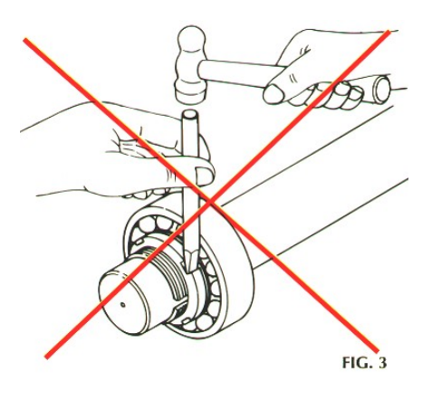
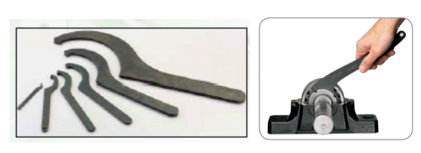
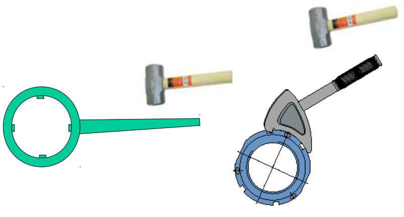
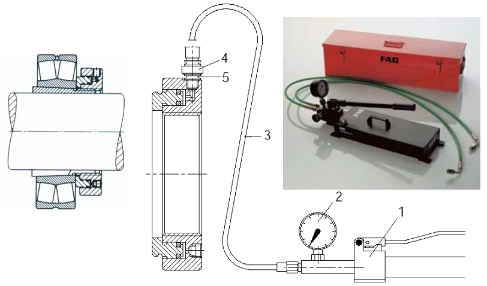
4. Procedimentos de Montagem e Ajuste
O ajuste é feito para reduzir a folga radial interna do rolamento.
- Método 1: Medição da Folga Radial Apenas em Rolamentos de rolos(com Calibrador de Lâminas)
- A medição da folga é feita antes e durante a montagem.
- A lâmina do calibrador deve passar simultaneamente em ambas as carreiras de rolos. CLIQUE AQUI PARA FAZER O DOWNLOAD DA TABELA DE REDUÇÃO DE FOLGA
- Para rolamentos grandes, o anel pode ovalizar com seu próprio peso. A folga correta (F) é calculada pela fórmula F = (a+b+)/(c) * 2/2.
- Existe uma tabela detalhada para a diminuição da folga radial em rolamentos FAG com furo cônico.
- Método 2: Controle do Deslocamento Axial
- Inicialmente, a porca deve ser torqueada manualmente para garantir o assentamento das superfícies cônicas.
- Um paquímetro ou micrômetro de profundidade é usado para controlar a medida inicial, o avanço e a medida final.
- A tabela de ajuste indica diferentes valores de deslocamento para montagem sobre eixo e sobre bucha.
- Método 3: Ajuste por Ângulo de Torque (para Rolamentos de Esferas)
- Após assentar as superfícies com torque manual, um ângulo de torque adicional é aplicado. 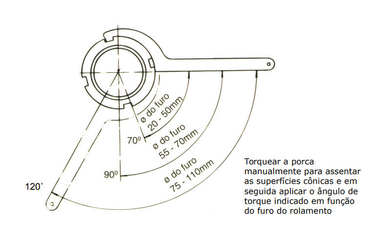
- O ângulo varia com o diâmetro do furo: 90° para furos de 20-50mm, 120° para 55-70mm, e 70° para 75-110mm.
- Finalização:
- Após o ajuste, a porca deve ser travada para garantir a fixação.
-
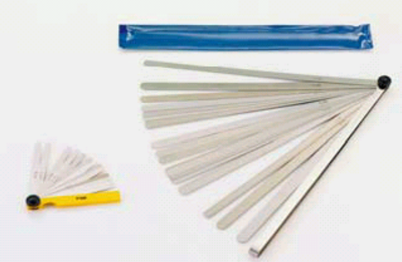
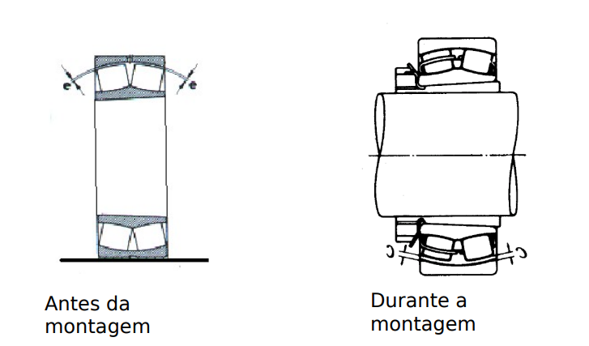
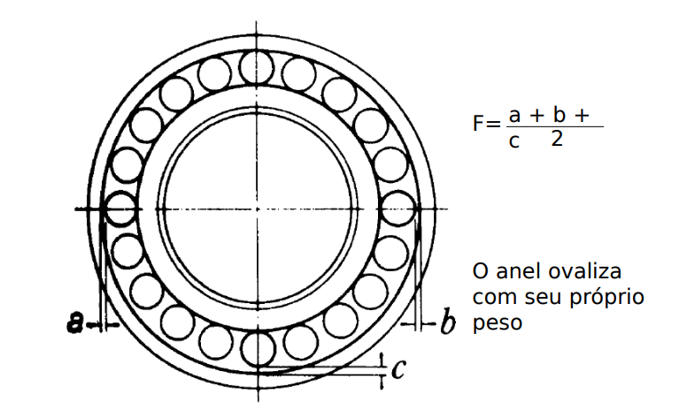
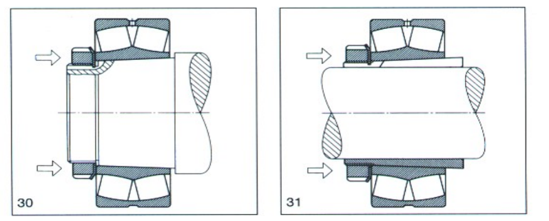
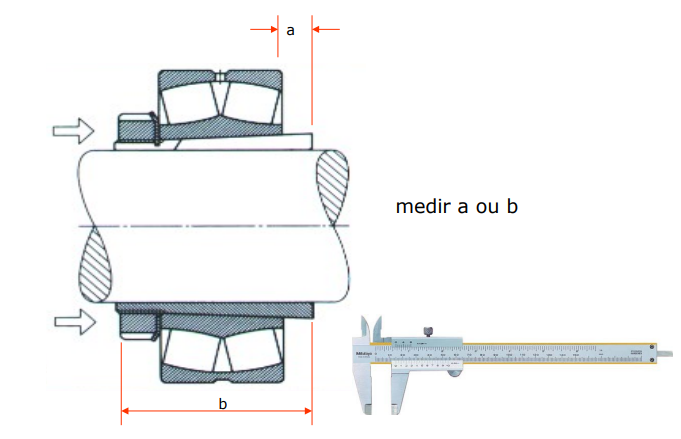
Módulo 4: Montagem de Precisão: Rolamentos de Contato Angular
Este é um tópico avançado. Rolamentos de contato angular são projetados para suportar cargas combinadas (axiais e radiais) e exigem uma montagem de altíssima precisão. O conceito de pré-carga é fundamental e um erro aqui compromete todo o sistema.
4.1 Entendendo os Rolamentos de Contato Angular
A principal característica é o ângulo de contato (geralmente de 15°, 25°, 30° ou 40°). Quanto maior o ângulo, maior a capacidade de carga axial. Eles quase sempre são montados em pares para suportar cargas axiais em ambas as direções e definir a rigidez do sistema.
- Pares Casados: Os rolamentos vêm do fabricante em pares casados, que não devem ser misturados. Eles podem ser arranjados de três formas:
- Arranjo Costas com Costas (DB - Back-to-Back): As linhas de carga divergem. Oferece altíssima rigidez e suporta momentos de inclinação. É o arranjo mais comum.
- Arranjo Frente a Frente (DF - Face-to-Face): As linhas de carga convergem. É mais complacente a desalinhamentos, mas menos rígido que o DB.
- Arranjo em Tandem (DT): Montados na mesma direção. Usado para suportar cargas axiais muito altas em apenas um sentido.
4.2 O Conceito Crítico de Pré-Carga
A pré-carga é uma força axial interna permanente aplicada ao par de rolamentos na montagem. Ela elimina a folga interna, aumentando a rigidez, a precisão de rotação e a vida útil do rolamento, além de reduzir o ruído.
- Pré-carga Leve, Média ou Pesada: É definida pelo fabricante e obtida pelo ajuste axial preciso dos anéis. Um excesso de pré-carga gera superaquecimento e falha prematura. Pouca pré-carga causa vibração e desgaste.
- Rolamentos Universalmente Emparelháveis: Possuem a pré-carga "embutida" e são projetados para que, ao montar os anéis interno e externo em contato, a pré-carga correta seja atingida.
4.3 Passo a Passo: Montagem de um Par (DB)
- Inspeção e Limpeza: Verifique as tolerâncias do eixo (ex: j5) e do alojamento (ex: H6). Limpeza absoluta é crucial.
- Identificação: Localize as marcações em "V" na face externa dos rolamentos. Essas marcas indicam como o par deve ser montado para garantir a pré-carga correta. Elas devem formar uma seta apontando para fora no arranjo DB.
- Montagem do Primeiro Rolamento no Eixo: Use uma prensa ou aquecedor por indução. Aplique força SOMENTE no anel interno. Monte até que encoste firmemente no batente do eixo.
- Montagem do Segundo Rolamento no Eixo: Repita o processo para o segundo rolamento. Instalação no Alojamento: Insira o conjunto eixo/rolamentos no alojamento. Use uma prensa para aplicar força SOMENTE nos anéis externos de ambos os rolamentos, simultaneamente e de forma perfeitamente alinhada.
- Fixação e Verificação: Fixe a tampa do alojamento ou a porca do eixo que irá "fechar" o conjunto, aplicando a pré-carga. O aperto deve ser feito com um torquímetro seguindo a especificação do projeto.
- Teste Final: Gire o eixo manualmente. Ele deve girar suavemente, com uma leve resistência (o torque de atrito da pré-carga). Um eixo "solto" ou "travado" indica um problema de pré-carga. Use um relógio comparador para verificar se o "run-out" (excentricidade) axial e radial está dentro das especificações.
Módulo 5: Sistemas de Mancais: Montagem e Alinhamento
O mancal (ou caixa) é o componente que aloja e suporta o rolamento. Uma montagem correta do mancal é tão crítica quanto a do rolamento, pois ele define o alinhamento, a lubrificação e a proteção do sistema. Focaremos no tipo mais comum: o mancal bipartido (plummer block).
5.1 Preparação da Base: O Alicerce de Tudo
A causa número um de falhas em mancais é uma base de montagem inadequada.
- Verificação de Planicidade: A superfície onde o mancal será aparafusado deve ser perfeitamente plana. Use uma régua de precisão e um calibrador de lâminas. A tolerância de planicidade deve ser rigorosa (ex: 0.03 mm).
- Calços: Se a superfície não for plana, é obrigatório o uso de calços metálicos de precisão para corrigir. Nunca monte um mancal sobre uma base irregular, pois isso o deforma.
- Limpeza: A base deve estar completamente livre de tinta, ferrugem e detritos.
5.2 Passo a Passo: Montagem de um Mancal Bipartido
- Inspeção e Limpeza do Mancal: Verifique a base e a tampa em busca de trincas ou rebarbas. Limpe o furo do alojamento e as superfícies de contato.
- Montagem do Rolamento no Eixo: Geralmente, em mancais bipartidos, usa-se um rolamento autocompensador montado com uma bucha de fixação. Realize a montagem da bucha no eixo conforme o procedimento correto (redução de folga ou deslocamento axial).
- Posicionamento na Base: Coloque o conjunto eixo/rolamento/bucha na metade inferior (base) do mancal. Certifique-se de que o rolamento está centralizado.
- Instalação das Vedações: Posicione os anéis de vedação (ex: labirintos ou V-rings) nas ranhuras da base.
- Lubrificação Inicial: Este é o momento de aplicar a graxa. Preencha de 30% a 50% do espaço livre na base do mancal. Não exagere. Use o tipo de graxa especificado para a aplicação.
- Fechamento da Tampa: Posicione a tampa, garantindo que os pinos-guia ou as superfícies de encaixe estejam alinhados.
- Aperto Controlado dos Parafusos: Aperte os parafusos da tampa de forma cruzada e em etapas (ex: 50%, 75%, 100% do torque) usando um torquímetro. O torque final é especificado pelo fabricante do mancal e é CRÍTICO para não deformar o alojamento.
- Fixação na Estrutura: Aparafuse a base do mancal na estrutura de suporte, novamente usando o torque especificado.
- Verificação Final: Gire o eixo manualmente. Ele deve girar livremente. Se houver resistência, algo está errado (aperto excessivo, desalinhamento).
5.3 Alinhamento entre Mancais
Em eixos longos suportados por dois ou mais mancais, o alinhamento entre eles é fundamental. Um desalinhamento angular ou paralelo sobrecarrega os rolamentos. Use relógios comparadores ou sistemas de alinhamento a laser para garantir que os centros dos mancais estejam perfeitamente colineares.
Módulo 6: Erros Críticos em Montagens de Precisão e Como Evitá-los
Em montagens de alta performance, pequenos erros causam falhas catastróficas. Aprender a identificar e evitar estas "pegadinhas" é o que diferencia um profissional de um amador.
Erro 1: Pré-carga Incorreta (Rolamentos de Contato Angular)
A Armadilha: Aplicar torque excessivo na porca de fixação, gerando pré-carga excessiva. Isso causa um aumento dramático no atrito, superaquecimento, queima do lubrificante e falha do rolamento em poucas horas.
A Fuga: Use um torquímetro e siga rigorosamente a especificação do projeto. Se não houver especificação de torque, a pré-carga deve ser avaliada medindo o torque de giro do eixo. Confie nos dados, não na "sensibilidade".
Erro 2: Aplicar Força pelos Corpos Rolantes
A Armadilha: Para montar um anel interno no eixo, martelar ou prensar o anel externo. A força de montagem passa pelas esferas, causando micro-amassados (brinelling) nas pistas. O rolamento já sai da montagem condenado.
A Fuga: Regra de Ouro: a força de montagem SÓ pode ser aplicada no anel que está sendo montado com interferência. Use buchas de impacto corretas ou aqueça o anel com um aquecedor por indução.
Erro 3: Inverter um Par Casado (Contato Angular)
A Armadilha: Montar um par DF (Frente a Frente) como se fosse DB (Costas com Costas). As marcações em "V" não são decorativas, elas definem a geometria e a pré-carga. Uma inversão altera completamente a rigidez e a capacidade de carga do sistema.
A Fuga: Identifique as marcações em "V" antes de tirar os rolamentos da caixa e entenda o que cada arranjo (DB, DF, DT) significa. Monte sempre seguindo as marcações.
Erro 4: Apertar os Parafusos da Tampa do Mancal de Forma Desigual
A Armadilha: Apertar um parafuso da tampa até o fim e depois o outro. Isso inclina a tampa e deforma o alojamento do rolamento, transformando um furo redondo em oval. O rolamento será "esmagado", superaquecendo e falhando.
A Fuga: Use sempre um torquímetro e siga uma sequência de aperto cruzada, em pelo menos 3 etapas (ex: 50% do torque, 75%, 100%).
Erro 5: Montar um Mancal sobre uma Base Irregular
A Armadilha: Ignorar a planicidade da base de montagem. Uma base "torta" ou com rebarbas transfere a deformação para a base do mancal, que por sua vez deforma o alojamento e o rolamento.
A Fuga: Verifique a planicidade com uma régua de precisão antes de qualquer coisa. Se necessário, usine a base ou use calços de precisão para garantir um apoio 100% plano.
Erro 6: Contaminação por Excesso de Graxa
A Armadilha: Preencher 100% do mancal com graxa, achando que "quanto mais, melhor". O excesso de graxa causa um efeito de "batimento", onde o rolamento precisa vencer a resistência da graxa, gerando superaquecimento e separação do óleo base.
A Fuga: Siga a regra: preencha de 30% a 50% do espaço livre do mancal. A graxa precisa de espaço para se mover e dissipar o calor.
Módulo Final: Quiz e Certificação
Parabéns por concluir a parte teórica! Agora, teste seus conhecimentos para obter o certificado. Você precisa de 100% de acerto para ser aprovado.